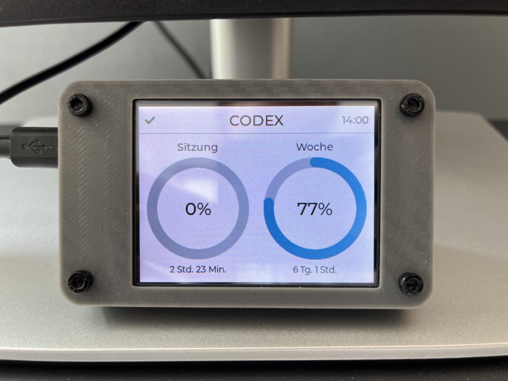
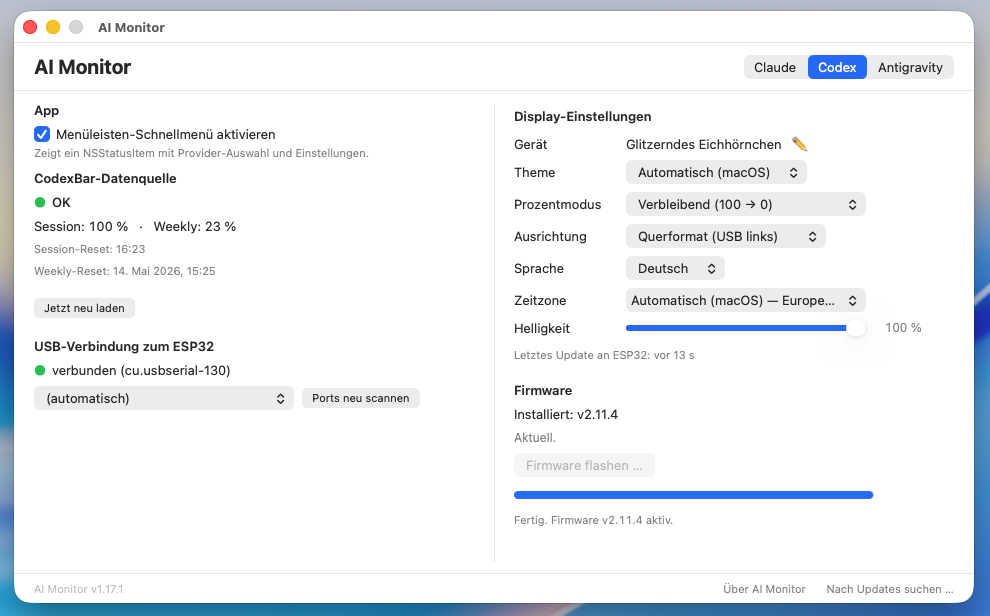
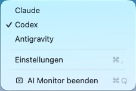
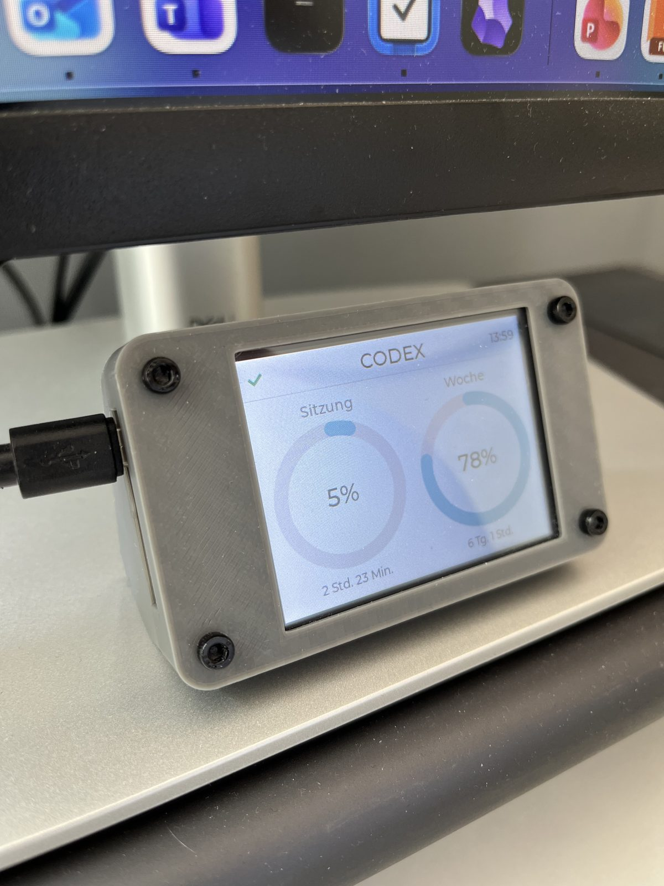

01
CodexBar installieren
CodexBar meldet dich bei Claude, Codex oder Antigravity an und schreibt die lokale Usage-Datei.
CodexBar -> Mac App -> USB Display
Ein kleines ESP32-Desk-Display für Claude, Codex und Antigravity. CodexBar sammelt die Limits, die Mac App ist die Zentrale, das Display bleibt schlicht per USB verbunden.



Einmal einrichten, danach läuft es nebenbei
Die Webseite muss nicht mehr direkt flashen. Die Mac App erkennt das Display, lädt die passende Firmware aus GitHub Releases und schreibt die Daten von CodexBar per USB auf das Board.
CodexBar meldet dich bei Claude, Codex oder Antigravity an und schreibt die lokale Usage-Datei.
Die App liest CodexBar, erkennt das Display und merkt sich Einstellungen pro Gerät.
ESP32 per USB-Datenkabel anschließen. Kein WLAN, keine Provider-Credentials auf dem Board.
ILI9341 oder ST7789 auswählen, flashen, Provider wählen, fertig.
Pflicht-Datenquelle für Claude, Codex und Antigravity. AI Monitor spricht nicht direkt mit den Providern, sondern liest den lokalen CodexBar-Snapshot.
Menüleisten-App für macOS. Sie erkennt USB-Displays, schickt Live-Daten, flasht Firmware und verwaltet Einstellungen pro Gerät.
Die Firmware liegt weiter in GitHub Releases. Der normale Weg ist aber die App, weil sie das richtige Release lädt und die Board-Variante pro Gerät merkt.
Hardware
Unterstützt werden beide gängigen ESP32-2432S028-Varianten. Wenn die Anzeige nach einem Flash weiß bleibt oder verdreht wirkt, war meist die andere Panel-Variante richtig.

2.8-Zoll-TFT, Touch, ESP32-WROOM-32 und USB-Serial. Die App unterscheidet ILI9341- und ST7789-Displays beim Firmware-Flash.
Die CYD-Boards passen in mehrere 3D-Druck-Gehäuse. Zwei brauchbare Ausgangspunkte liegen bei MakerWorld.
Gehäuse
Hilfe
Die häufigsten Probleme liegen bei Kabel, USB-Treiber oder der falschen Display-Variante. Die App führt durch den Flash-Prozess, aber diese Checks helfen beim Einordnen.
Prüfe zuerst das USB-Kabel. Viele Kabel laden nur. Bei CH340-Boards kann der CH340-Treiber helfen, bei CP2102-Boards der Silicon-Labs-Treiber.
Dann wurde sehr wahrscheinlich die falsche Firmware-Variante geflasht. In der App beim Firmware-Flash zwischen ILI9341 und ST7789 wechseln.
CodexBar muss laufen und für den gewählten Provider Daten schreiben. In AI Monitor kannst du Claude, Codex oder Antigravity danach als Anzeigequelle wählen.
Die aktuellen Firmware-Binaries liegen im Release v2.11.4. Der normale Weg bleibt der Flash aus der Mac App.
Installiere CodexBar, lade AI Monitor und stecke das ESP32-Display an. Danach bleibt die Nutzung sichtbar, ohne dass ein Browserfenster offen sein muss.